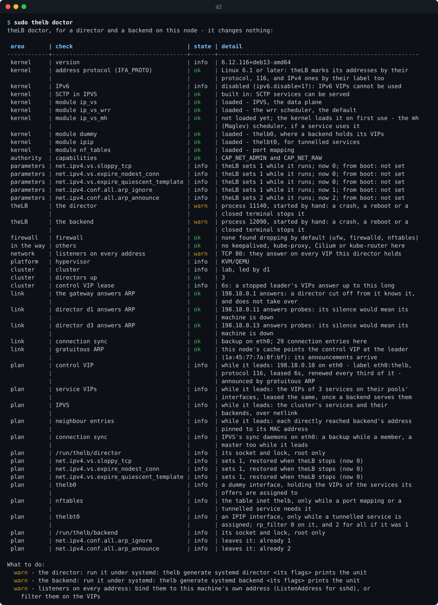

Guides
Troubleshooting
Start with thelb doctor. It checks the machine, changes nothing, and tells you what to fix.
thelb doctor#
sudo thelb doctordoctor changes nothing. It checks:
- the kernel, its modules and IPv6, and theLB's capabilities;
- the kernel settings theLB sets, and what the system sets at boot;
- whether theLB runs under systemd - with a long enough
RestartSec=- or by hand; - the firewall (ufw, firewalld or nftables), with the commands that open the control port and connection sync;
- SELinux, and software that gets in the way: keepalived, kube-proxy, Cilium, kube-router, other IPVS services;
- on a director, programs that listen on every address - they would answer on every VIP too;
- clouds where a VIP cannot move, and hypervisors that need a setting;
- the clock, and the cluster this machine's director sees;
- the network link: whether the gateway and the other directors answer, whether connection sync works, and whether this machine sees the leader's announcements;
- the plan: everything theLB would add, set and start on this machine.
It prints a table, then what to do. --json gives the same for scripts. It exits with 1 when theLB could not run on the machine, or could not do part of its work.

thelb doctor on a director in the lab.As text
$ sudo thelb doctor
theLB doctor, for a director and a backend on this node - it changes nothing:
area | check | state | detail
------------+---------------------------------------+-------+------------------------------------------------------------------------------------------------------------------------------------------
kernel | version | info | 6.12.116+deb13-amd64
kernel | address protocol (IFA_PROTO) | ok | Linux 6.1 or later: theLB marks its addresses by their protocol, 116, and IPv4 ones by their label too
kernel | IPv6 | info | disabled (ipv6.disable=1?): IPv6 VIPs cannot be used
kernel | SCTP in IPVS | ok | built in: SCTP services can be served
kernel | module ip_vs | ok | loaded - IPVS, the data plane
kernel | module ip_vs_wrr | ok | loaded - the wrr scheduler, the default
kernel | module ip_vs_mh | ok | not loaded yet; the kernel loads it on first use - the mh (Maglev) scheduler, if a service uses it
kernel | module dummy | ok | loaded - thelb0, where a backend holds its VIPs
kernel | module ipip | ok | loaded - thelbt0, for tunnelled services
kernel | module nf_tables | ok | loaded - port mapping
authority | capabilities | ok | CAP_NET_ADMIN and CAP_NET_RAW
parameters | net.ipv4.vs.sloppy_tcp | info | theLB sets 1 while it runs; now 0; from boot: not set
parameters | net.ipv4.vs.expire_nodest_conn | info | theLB sets 1 while it runs; now 0; from boot: not set
parameters | net.ipv4.vs.expire_quiescent_template | info | theLB sets 1 while it runs; now 0; from boot: not set
parameters | net.ipv4.conf.all.arp_ignore | info | theLB sets 1 while it runs; now 1; from boot: not set
parameters | net.ipv4.conf.all.arp_announce | info | theLB sets 2 while it runs; now 2; from boot: not set
theLB | the director | warn | process 11140, started by hand: a crash, a reboot or a closed terminal stops it
theLB | the backend | warn | process 12090, started by hand: a crash, a reboot or a closed terminal stops it
firewall | firewall | ok | none found dropping by default (ufw, firewalld, nftables)
in the way | others | ok | no keepalived, kube-proxy, Cilium or kube-router here
network | listeners on every address | warn | TCP 80: they answer on every VIP this director holds
platform | hypervisor | info | KVM/QEMU
cluster | cluster | info | lab, led by d1
cluster | directors up | ok | 3
cluster | control VIP lease | info | 6s: a stopped leader's VIPs answer up to this long
link | the gateway answers ARP | ok | 198.18.0.1 answers: a director cut off from it knows it, and does not take over
link | director d1 answers ARP | ok | 198.18.0.11 answers probes: its silence would mean its machine is down
link | director d3 answers ARP | ok | 198.18.0.13 answers probes: its silence would mean its machine is down
link | connection sync | ok | backup on eth0; 29 connection entries here
link | gratuitous ARP | ok | this node's cache points the control VIP at the leader (1a:45:77:7a:8f:bf): its announcements arrive
plan | control VIP | info | while it leads: 198.18.0.10 on eth0 - label eth0:thelb, protocol 116, leased 6s, renewed every third of it - announced by gratuitous ARP
plan | service VIPs | info | while it leads: the VIPs of 3 services on their pools' interfaces, leased the same, once a backend serves them
plan | IPVS | info | while it leads: the cluster's services and their backends, over netlink
plan | neighbour entries | info | while it leads: each directly reached backend's address pinned to its MAC address
plan | connection sync | info | IPVS's sync daemons on eth0: a backup while a member, a master too while it leads
plan | /run/thelb/director | info | its socket and lock, root only
plan | net.ipv4.vs.sloppy_tcp | info | sets 1, restored when theLB stops (now 0)
plan | net.ipv4.vs.expire_nodest_conn | info | sets 1, restored when theLB stops (now 0)
plan | net.ipv4.vs.expire_quiescent_template | info | sets 1, restored when theLB stops (now 0)
plan | thelb0 | info | a dummy interface, holding the VIPs of the services its offers are assigned to
plan | nftables | info | the table inet thelb, only while a port mapping or a tunnelled service needs it
plan | thelbt0 | info | an IPIP interface, only while a tunnelled service is assigned; rp_filter 0 on it, and 2 for all if it was 1
plan | /run/thelb/backend | info | its socket and lock, root only
plan | net.ipv4.conf.all.arp_ignore | info | leaves it: already 1
plan | net.ipv4.conf.all.arp_announce | info | leaves it: already 2
What to do:
warn - the director: run it under systemd: thelb generate systemd director <its flags> prints the unit
warn - the backend: run it under systemd: thelb generate systemd backend <its flags> prints the unit
warn - listeners on every address: bind them to this machine's own address (ListenAddress for sshd), or filter them on the VIPsWhere no director runs yet, give --vip and --port, so that doctor can show the plan and the firewall commands:
sudo thelb doctor --role director --vip 10.0.0.10 --port 7443Common problems#
A node waits for approval, and nothing happens#
Approve it on a director: sudo thelb admin approve <name>. Check its fingerprint first - see Secrets and approval.
"did not accept the secret"#
The node's secret file is not this cluster's. On a director, print the right one, put it in the node's file, and start the node again:
sudo thelb admin secret show --role backend # or --role director"nothing accepts a connection on port 7443"#
The control VIP answers on the network, but its port does not. Most often a firewall on the leader drops it. Open the control port to the directors and backends:
sudo ufw allow from 10.0.0.0/24 to any port 7443 proto tcpIf no firewall is in the way, another machine has the address: choose another control VIP.
A backend gets no traffic#
Look at the leader's log for backend not serving. Its reason= says which condition failed:
| Reason | What to do |
|---|---|
no heartbeat | the backend's theLB is not running, or cannot reach the control VIP |
its own check fails | the application is down on the backend, or listens on another port |
it does not hold the VIP yet | wait a moment; if it stays, look at the backend's log |
the director's check fails | the directors cannot reach the application: check that it listens on all addresses, and that the firewall lets the directors in |
it is stopping | the backend is shutting down |
A tunnelled service does not answer#
- Check that the backend has the
ipipmodule (sudo modprobe ipip) and that IP protocol 4 from the directors is allowed. - Check that the backends' routers allow replies from the VIPs' addresses. Source-address checks (uRPF, cloud source/destination checks) drop them. See Direct routing and tunnels.
WARN drift repaired again and again#
Something else keeps changing theLB's kernel setup - a script, a person, another network tool - and theLB keeps putting it back. Find what does it and stop it, or the two will undo each other every 10 seconds.
Two directors, and no leader#
The log says not standing alone reason=.... The reason tells you why:
a partition, not a crash: the other director answers on the network but not on its control port. Open the control port between them.waiting out the control VIP's ... lease: wait - it has not waited long enough yet.... still answers for the control VIP: something still holds the VIP. Checkip addresson the other machine.does not reach its network: this director's own link or gateway is down.
See Directors and failover for the rules.
More help#
- Log messages lists the messages that need action, and what to do.
- When things fail says what theLB does in every failure.
thelb statuson each node, and the logs, are the first places to look.- Still stuck? Open an issue with the output of
thelb doctorand the log around the problem.